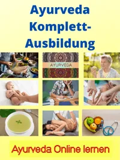
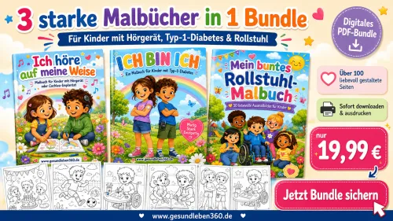
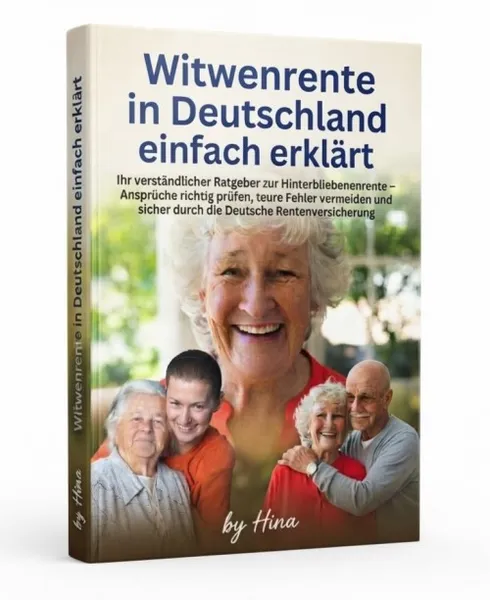

„Ich bin ich“ – Mutmach-Malbuch für Kinder mit Typ-1-Diabete
Produktprofil · Marktplatz-Daten 2026-10-13 · Verkaufsseiten-Recherche 2026-10-13 · Kategorien: Education, Family & Children, Health & Fitness
- „Ich bin ich“ – Mutmach-Malbuch für Kinder mit Typ-1-Diabete ist ein/e E-Book in Education und Family & Children, vertrieben über den Digistore24-Marktplatz von Anbieter Herzenswelt, gelistet seit 2026-07-13.
- Listenpreis $15.58; Digistore24 meldet — Checkout-Konversion, — Stornierungsquote und 70 % Affiliate-Provision.
- Verdienst pro Verkauf (Affiliate): $10.90 (Anbieter-seitige Statistik, keine Prognose).
Interesse an „Ich bin ich“ – Mutmach-Malbuch für Kinder mit Typ-1-Diabete? Aktueller Preis, Boni und Garantiebedingungen finden Sie auf der offiziellen Seite des Anbieters:
Offizielle Verkaufsseite ansehen
Affiliate-Link (Werbung) — wir verdienen ggf. eine Provision, ohne Mehrkosten für Sie.

Marktplatz-Daten
| Produkttyp | E-Book |
|---|---|
| Preis | $15.58 (Single payment) |
| Affiliate-Provision | 70 % |
| Garantie/Rückgabe | Laut Verkaufsseite des Anbieters — vor dem Kauf auf der offiziellen Seite prüfen |
| Anbieter | Herzenswelt (gelistet seit 2026-07-13) |
| Marktplatz-Statistiken* | Checkout-Konversion — · Stornoquote — · Verdienst/Verkauf $10.90 |
* Anbieter-seitige Statistiken von Digistore24; sie hängen von der Traffic-Qualität ab und sind keine Prognose.
Marktplatz-Beschreibung des Anbieters
<p><strong>Ein liebevoll gestaltetes Nischenprodukt für Eltern, Familien und alle, die Kinder mit Typ-1-Diabetes begleiten.</strong></p> <p>„Ich bin ich“ ist ein digitales Malbuch, das Kinder mit Typ-1-Diabetes ganz selbstverständlich als fröhliche, aktive und starke Alltagshelden zeigt. Auf <strong>35 kindgerechten Seiten</strong> erleben die Kinder typische Situationen wie Kindergarten, Schule, Sport, Geburtstag, Arztbesuch, Ausflüge und gemütliche Momente zu Hause. Sensor und Insulinpumpe werden dabei sichtbar und positiv in den Alltag integriert.</p> <p>Neben zahlreichen Ausmalbildern enthält das PDF liebevolle Mutmachbotschaften, eine Urkunde und eine persönliche „Das bin ich“-Seite. Das Produkt eignet sich ideal als Geschenk, kleine Aufmerksamkeit nach der Diagnose, Beschäftigung für zu Hause oder als unterstützendes Material für Familien, Diabetesambulanzen, Beratungsstellen und pädagogische Einrichtungen. Es handelt sich um ein kreatives Malbuch und ausdrücklich nicht um einen medizinischen Ratgeber.</p> <h3>Warum sich das Produkt gut bewerben lässt</h3> <ul> <li>klar definierte und emotional erreichbare Zielgruppe</li> <li>besonderes Nischenprodukt mit wenig direkter Konkurrenz</li> <li>sofortiger digitaler Download ohne Versand</li> <li>liebevolle, positive Darstellung statt Angst oder Mitleid</li> <li>geeignet für Blogs, Pinterest, Instagram, Familien- und Gesundheitsthemen</li> <li><strong>70 % Affiliate-Provision</strong></li> </ul> <h3>Zielgruppe</h3> <p>Eltern und Angehörige von Kindern mit Typ-1-Diabetes, Diabetesberaterinnen und Diabetesberater, Kinderarztpraxen, Diabetesambulanzen, Erzieherinnen, Lehrkräfte sowie Familien- und Gesundheitsblogs.</p> <p><strong>Jetzt Affiliate-Partnerschaft anfragen und ein besonderes digitales Kinderprodukt mit echtem emotionalem Mehrwert bewerben.</strong></p>
Von der Verkaufsseite des Anbieters
Seitentitel: Malbuch für Kinder mit Typ-1-Diabetes als PDF
Meta-Beschreibung: Liebevolles Malbuch für Kinder mit Typ-1-Diabetes: 35 Seiten mit kindgerechten Ausmalbildern, Sensor, Insulinpumpe und starken Alltagsszenen. Jetzt als PDF downloaden.
Abschnitts-Überschriften
- Liebevolle Ausmalbilder, in denen Kinder mit Sensor, Pumpe & Co. ganz selbstverständlich vorkommen
- Was dieses Malbuch besonders macht
- Für wen ist das Malbuch geeignet?
- Das ist enthalten
- Die Motive im Überblick
- Warum dieses Malbuch Kindern guttun kann
- Sofort als PDF herunterladen
- Einführungspreis
- Jetzt herunterladen
- Impressum
Einstiegstext
Manchmal sind es die kleinen Dinge, die Kindern zeigen: Ich bin nicht komisch. Ich bin nicht allein. Ich bin genau richtig.
Dieses Malbuch wurde für Kinder mit Typ-1-Diabetes gestaltet – mit fröhlichen, kindgerechten Ausmalbildern, in denen Sensor, Insulinpumpe oder Diabetes-Täschchen ganz normal zum Alltag dazugehören.
Nicht laut. Nicht dramatisch. Nicht medizinisch kompliziert. Sondern einfach liebevoll, stärkend und schön.
Viele Kinder lieben Malbücher. Aber wie oft sehen Kinder mit Typ-1-Diabetes sich selbst in solchen Bildern wieder?
Recherche-Methode: rohes HTML · 715 Wörter · Qualität: medium · recherchiert am 2026-10-13. Vollständige Recherche-Datei (MD) ↗
Wie Produkte dieser Art geliefert werden
Allgemeiner Hinweis zu diesem Produkttyp (keine anbieterspezifische Anleitung): E-Books auf Digistore24 werden als digitaler Download geliefert (meist PDF/EPUB): direkt nach dem Checkout erhalten Sie einen Downloadlink oder Mitgliederzugang und können auf jedem Gerät lesen. Für die genaue Anwendung von „Ich bin ich“ – Mutmach-Malbuch für Kinder mit Typ-1-Diabete sind die offizielle Verkaufsseite und die enthaltenen Materialien maßgeblich.
Gut zu wissen
- Keine Garantie-Formulierung in unserer Recherche gefunden — bestätigen Sie das Rückgabefenster auf der offiziellen Seite, bevor Sie kaufen.
- Marktplatz-Zahlen (Preis, Provision, Konversion, Stornoquote) — Quelle: offizielle Digistore24-Marktplatz-API (Affiliate-Sicht), Stand 2026-10-13. Gegenprüfung: Marktplatz-Suche nach Produkt-ID 710085.
- Verkaufsseiten-Zitate — Quelle: https://gesundleben360.de/malbuch-fur-kinder-mit-typ-1-diabetes/, abgerufen 2026-10-13 (Methode: rohes HTML). Verify: offizielle Seite öffnen.
- Garantie / Rückgabe — vom Anbieter festgelegt; vor dem Kauf auf der Verkaufsseite bestätigen.
- Nicht von uns geprüft: Produktqualität, Ergebnisse, Testimonials — kein Praxistest für dieses Listing durchgeführt.
Häufige Fragen zu „Ich bin ich“ – Mutmach-Malbuch für Kinder mit Typ-1-Diabete
Antworten aus dem Marktplatz-Snapshot (2026-10-13) und der Verkaufsseiten-Recherche (2026-10-13); Anbieteraussagen sind inline gekennzeichnet.
Was ist „Ich bin ich“ – Mutmach-Malbuch für Kinder mit Typ-1-Diabete?
„Ich bin ich“ – Mutmach-Malbuch für Kinder mit Typ-1-Diabete ist ein Angebot des Typs „E-Book" im Digistore24-Marktplatz, Anbieter: Herzenswelt, gelistet seit 2026-07-13. Eingepflegt unter Bildung und Familie & Kinder. Digistore24 wickelt Checkout, Lieferung und Rückgaben ab.
Wie viel kostet „Ich bin ich“ – Mutmach-Malbuch für Kinder mit Typ-1-Diabete?
Der Digistore24-Marktplatz listet es für $15.58 (single payment). Preise legt der Anbieter fest und können sich ändern — der Marktplatz-Eintrag oben zeigt den Schnappschuss; die offizielle Verkaufsseite zeigt den aktuellen Preis.
Gibt es eine Geld-zurück-Garantie für „Ich bin ich“ – Mutmach-Malbuch für Kinder mit Typ-1-Diabete?
Unsere Verkaufsseiten-Recherche hat keine explizite Garantie-Formulierung gefunden. Viele Digistore24-Produkte bieten 60 Tage Geld-zurück, aber das legt jeder Anbieter selbst fest — bestätigen Sie es auf der offiziellen Verkaufsseite, bevor Sie kaufen.
Ist „Ich bin ich“ – Mutmach-Malbuch für Kinder mit Typ-1-Diabete seriös?
Wir bewerten keine Seriosität — wir veröffentlichen überprüfbare Zahlen: Anbieter Herzenswelt (gelistet seit 2026-07-13), Checkout-Konversion —, Stornoquote —, Affiliate-Verdienst/Verkauf $10.90 (alles Anbieter-seitige Marktplatz-Statistiken). Lesen Sie unsere 6-Punkte-Bewertungsmethode und entscheiden Sie anhand der Zahlen — oder diskutieren Sie „Ich bin ich“ – Mutmach-Malbuch für Kinder mit Typ-1-Diabete auf GitHub.
Wo kann ich „Ich bin ich“ – Mutmach-Malbuch für Kinder mit Typ-1-Diabete sicher kaufen?
Nur über die offizielle Verkaufsseite, die auf dieser Seite verlinkt ist (Checkout und Rückgaben laufen über Digistore24). Prüfen Sie dort Preis und Garantie vor der Bestellung. Der Link ist ein Affiliate-Link — der Kauf unterstützt diese Website ohne Mehrkosten für Sie.
Wie erhalte ich „Ich bin ich“ – Mutmach-Malbuch für Kinder mit Typ-1-Diabete nach der Zahlung?
Der Checkout läuft über Digistore24: Nach der Zahlung erhalten Sie Ihren Zugang oder Download per E-Mail und in Ihrem Digistore24-Kundenkonto. Lieferdetails für diesen Produkttyp: E-Books auf Digistore24 werden als digitaler Download geliefert (meist PDF/EPUB): direkt nach dem Checkout erhalten Sie einen Downloadlink oder Mitgliederzugang und können auf jedem Gerät lesen. Bei Problemen kann der Digistore24-Käufersupport Ihre Bestellung wiederherstellen.
Alle 50 Käuferfragen zu Bildung — das komplette Kategorie-FAQ.
„Ich bin ich“ – Mutmach-Malbuch für Kinder mit Typ-1-Diabete auf Reddit diskutieren
In Community-Threads vergleichen echte Käufer Erfahrungen. Wir verlinken Communities, keine einzelnen Posts — Threads verschwinden, Subreddits bleiben:
- r/FITNESS — deutschsprachige Community mit Diskussionen zu education.
- Reddit-Suche nach „„Ich bin ich“ – Mutmach-Malbuch für Kinder mit Typ-1-Diabete" — Live-Ergebnisse, von uns nicht beeinflusst.
- Top-„Erfahrungs"-Treffer dieses Jahr — selbst nach Aktualität filtern.
Passendes auf Amazon.de
Physische Produkte und Zubehör, die häufig zusammen mit „Ich bin ich“ – Mutmach-Malbuch für Kinder mit Typ-1-Diabete gekauft werden:
- Nahrungsergänzung auf Amazon.de — Top-Ergebnisse, Amazon-Ranking.
- Bestseller: Nahrungsergänzung — live Liste von Amazon, von uns nicht kuratiert.
Werbung: Als Amazon-Partner verdient DigistorePicks DE an qualifizierten Käufen (Partner-tag adminstorede-21). Amazon setzt eigene Preise und Provisionen (niedrige einstellige Prozente — weit unter den 30–75% der Digistore24-Anbieter). Amazon ist ein Convenience-Angebot für Sachprodukte, kein Ersatz für das digitale Produkt oben.
Ähnliche Angebote in Bildung

<p>ZUGRIFF FÜR ALLE!</p> <p>Jede Person, die ein Arbeitsverhältnis mit Ihnen als Schulgemeinde hat sowie eine E-Mail-Adresse von Ihrer Schule,

<p><strong>MATRIXPRINZIP – High-Ticket-Produkt mit bis zu 820,56€ Provision pro Verkauf!</strong> </p> <p>Mindset, emotionale Inte
<p>Eine bislang noch einzigartige Ausbildung auf dem Markt für eine interessante Zielgruppe!</p> <p>Das Pferdegestützte Coaching auf Basis sys

<p>Für die Teilnehmer ist die Gesamt- oder Teil-Ausbildungen möglich.</p> <p>Empfehle das einzigartige Produkt & verdiene passives Ein
Weitere Angebote von Herzenswelt
Gesamtes Sortiment: Herzenswelt Anbieter-Hub — alle Listings mit Marktplatz-Daten.

<p><strong>Ein visuell hochwertiges digitales Produkt für eine große, gesundheitsbewusste Zielgruppe:</strong></p> <p>„Detox Smoot

<p><strong>Ein umfangreiches digitales Rezeptpaket für alle, die im Alltag weniger Kohlenhydrate essen und trotzdem abwechslungsreich genießen möcht

<p><strong>„Mein buntes Rollstuhl-Malbuch“ ist ein liebevoll gestaltetes digitales Malbuch für Kinder, das Kinder im Rollstuhl in fröhlichen, normal

<p>Bewirb ein liebevoll gestaltetes digitales Malbuch-Bundle mit einer starken Botschaft: Jedes Kind ist einzigartig und gehört dazu.</p> <p>D
„Ich bin ich“ – Mutmach-Malbuch für Kinder mit Typ-1-Diabete ist auch gelistet in
Familie & Kinder (268 Produkte) · Gesundheit & Fitness (577 Produkte)
Ähnliche Preislage in Bildung
<h1>Selbstwahrnehmung und Beinlängen-Check nach Dorn</h1> <h2>Affiliate-Produktbeschreibung</h2> <p>Viele Menschen beschäftigen si
<h3>DBM – Dorn-Breuss: Die präzise Lösung</h3> <h3>Der Minikurs für alle, die Dorn-Breuss wirklich verstehen wollen</h3> <p>Viele

<h1>Dorn-Methode in der Praxis – Mitgliederbereich & Video-Kurse</h1> <h2>Ein bekanntes Gesundheitsthema mit dauerhaftem Interesse<

<h2><strong><span style="vertical-align:inherit;"><span style="vertical-align:inherit;">Widow's pension in Germa
Ähnliche Suchanfragen
Wo Sie es sich ansehen können
Wo Sie es sich ansehen können
Aktuelle Preise, Garantie und Boni finden Sie auf der offiziellen Verkaufsseite:
Offizielle Verkaufsseite ansehen
Das ist ein Affiliate-Link (Werbung) — kaufen Sie darüber, verdienen wir ggf. eine Provision, ohne Mehrkosten für Sie.
Quellen & weiterführende Informationen
- Offizielle Verkaufsseite (aktueller Preis, Garantie, Boni): gesundleben360.de/malbuch-fur-kinder-mit-typ-1-diabetes/ (Affiliate-Link)
- Öffentliche Digistore24-Produktseite: digistore24.com/product/710085
- Vollständige Recherche-Datei (Markdown, versioniert): content/products/57509-ich-bin-ich-mutmach-malbuch-f-r-kinder-mit-typ-1-diabete.md
- Marktplatz-Kategorie: Bildung
Wie wir Produkte wie „Ich bin ich“ – Mutmach-Malbuch für Kinder mit Typ-1-Diabete bewerten
Sechs Prüfungen, ausschließlich mit offiziellen Marktplatz-Zahlen. Die vollständige Bewertungsmethode lesen · unsere Recherche-Standards & Kennzeichnung.
Fragen oder eigene Erfahrungen mit „Ich bin ich“ – Mutmach-Malbuch für Kinder mit Typ-1-Diabete?
Praxis-Tests veröffentlichen wir erst, nachdem wir ein Produkt selbst gekauft haben — aber Ihre Erfahrung hilft anderen Lesern: Diskussion zu „Ich bin ich“ – Mutmach-Malbuch für Kinder mit Typ-1-Diabete auf GitHub starten/verfolgen. Falsche Zahl gefunden? Korrektur melden — jede Seite zeigt ihre Datenstände, Korrekturen gelten für die ganze Website.